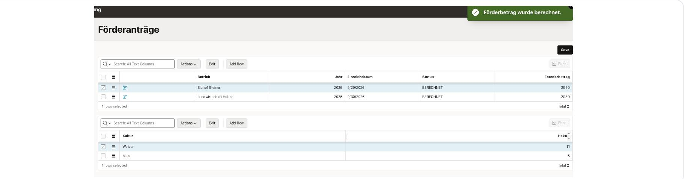
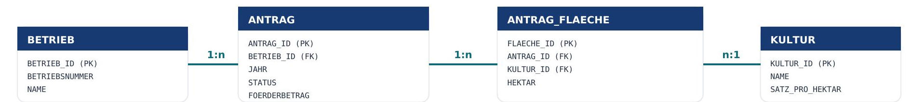
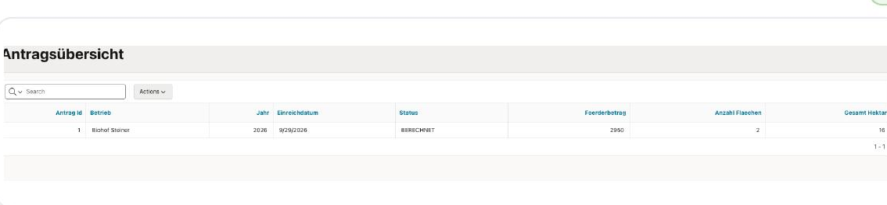

OVERVIEW
Overview
Subsidy processing needs structured master data, several land areas per application, a transparent status and a reproducible calculation. The application covers the full process in Oracle APEX, from capturing an application to calculating and storing the subsidy amount.

Applications and their land areas in a master-detail view.
SOLUTION
Solution
- Relational data model for farms, applications, land areas and crops, with data integrity enforced in the database.
- Business logic encapsulated in the database layer (PL/SQL), separated from the presentation layer, so calculation and validation rules are defined once and reused.
- Oracle APEX user interface for capturing and editing applications.
- Status handling with validation before results are stored.

Relational data model.
REPORTING
Reporting
A reporting view consolidates applications, farms and land areas into an overview of status, amounts and areas, used as the basis for an interactive report.

Application overview as an interactive report.
NEXT STEPS
Next steps
Role-based access control, a multi-step status workflow, rates by year, automated tests, a REST interface and audit logging.